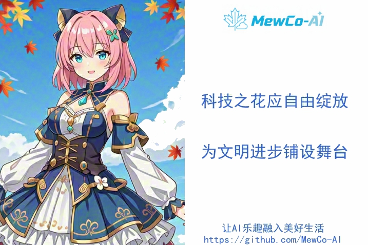

把最爱的角色，
带到每个人的数字生活
MewCo-AI（枫云智能）工作室成立于 2023 年 8 月，是一支怀揣梦想的年轻团队。我们因对科技与二次元文化的热爱而相聚，想把心中最爱的二游或动漫角色带到现实世界，成为每个人专属的全能型 AI 助手。

为热爱而聚，
为普惠而行
MewCo-AI 是一家致力于 AI + 二次元融合创新的非营利性工作室，聚焦打造国内领先的二次元 AI 助手开源项目生态。
我们精心打造的枫云平台是一个正在积极推进的大型 AI 公益项目。项目组开源了广受用户欢迎的枫云AI助手社区版，以及专为极客玩家打造的枫云AI助手Linux版。与开源社区积极合作，聚焦于普惠新型 AI 技术并提供便捷的使用方式，让用户专注于享受 AI 的乐趣。
我们秉持“让 AI 乐趣融入美好生活”的使命，项目面向生活助手、学习辅助、效率办公等多种场景，矢志成为民用人工智能行业的推动者。
了解开源项目科技之花应自由地绽放，
为人类文明的进步铺设舞台。
热爱之外，还有坚持
宗旨 · 勇往开拓未晓之境
不满足于复刻现成的产品，而是持续探索 AI 与二次元结合的新可能。从主动感知对话到通用电脑操控，每一次版本更新都来自对未知边界的挑战。
愿景 · 科技之花自由绽放
让先进的 AI 技术不再被高门槛与高成本束缚，以开源、免费、本地优先的方式，为每一个热爱科技与二次元的人铺好舞台。
使命 · 让 AI 乐趣融入美好生活
面向生活助手、学习辅助、效率办公等真实场景，把能听、能看、会思考的 AI 助手，变成日常里触手可及的存在。
一路走来，每一步都算数
从 2023 年夏天的一次相遇，到两个开源版本的持续迭代。感谢每一位用户、贡献者与同行者。
枫云AI助手Linux版 v4.3
新增三大超级智能体、IM 机器人、系统命令智能体与专注 / 放松模式。
枫云AI助手社区版 v4.2
新增双龙虾接口、通用自主操控、IM 聊天机器人、全域声音感知与声音设计 TTS。
枫云AI助手Linux版 v3.0
新增 VRM 3D 角色展示、音频事件检测与流式语音合成。
枫云AI助手社区版 v4.0
新增主动感知引擎、桌宠模式、VRM 3D 模型、多智能体与声纹识别。
枫云AI助手Linux版 v2.0
新增主动感知对话引擎与 RKLLM 生态。
枫云AI助手Linux版 v1.0
Linux 版正式开源发布，面向 ARM / X86 极客硬件。
开源发布枫云AI助手社区版 v3.0
新增 MMD 3D 模型、中长期记忆、自动读取角色模型与更多语音合成引擎。
枫云AI助手社区版 v2.0
新增实时语音打断、语音情感场景识别、多模态图像识别与本地知识库。
枫云AI助手社区版 v1.0
社区版正式开源发布，让每个人都能 DIY 自己的二次元 AI 助手。
开源发布MewCo-AI 工作室成立
因对科技与二次元文化的热爱而相聚，枫云的故事从这里开始。
起点联系我们，一起把热爱做成产品
无论是使用反馈、二次开发交流，还是单纯想聊聊 AI 与二次元，都欢迎找到我们。